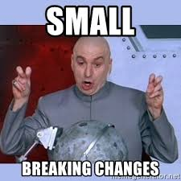

Kyma UI
How we use Fundamental libraries
Agenda
- Kyma and Console UI
- How do we work
- Our Goal
- Our Challanges
What is Kyma
Console - Kyma's Backoffice
- Tool for cloud administrators and cloud developers
- Multi-domain : service catalog, lambdas, monitoring, etc ...
- A set of micro UI apps (micro front-ends) orchestrated into one backoffice.
Luigi
Micro front-end orchestartion
- Scaling UI development
- Modularity
- Flexibility
- Security
How do we work?
- Mockups from zeplin
- Compose views from "customized" (wrapped) fundamental-react components
Our Goal
Library of react components - reusable accross Kyma UIs
.. so that ..
Domain experts CAN and WANT to maintain their UIs (microfrontends)
react-components
wrapper
- easier maintananence
- custom styles
- custom logic
Challanges
fundamental-react < fundamental-ngx
component API unstable - backward incompatibility
"closed" components
- hard to extend, hard to interact from outside
- hard to implement some custom features - props are not propagated if not declared in the component API
For example:
- Cannot pass custom class (`className` property) to some components (for example breadcrumb)
- Popover component API insufficient – cannot control its behaviour (opening, closing)
click event propagation
- If a form contains a dropdown – the form gets submitted on dropdown expand

unique "key" list issue
popover in modal issue